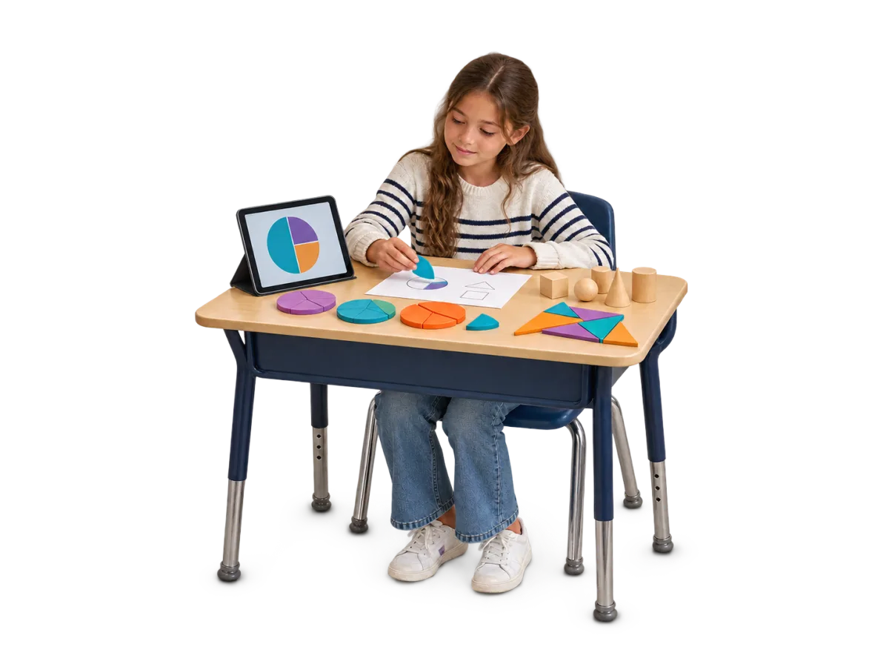
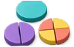
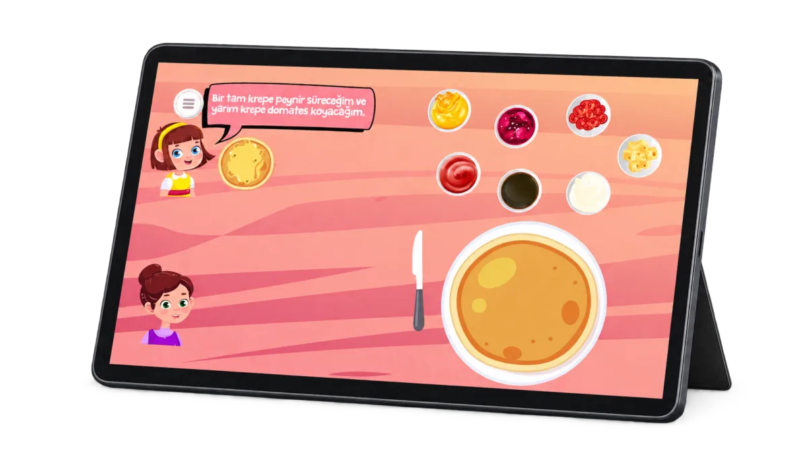
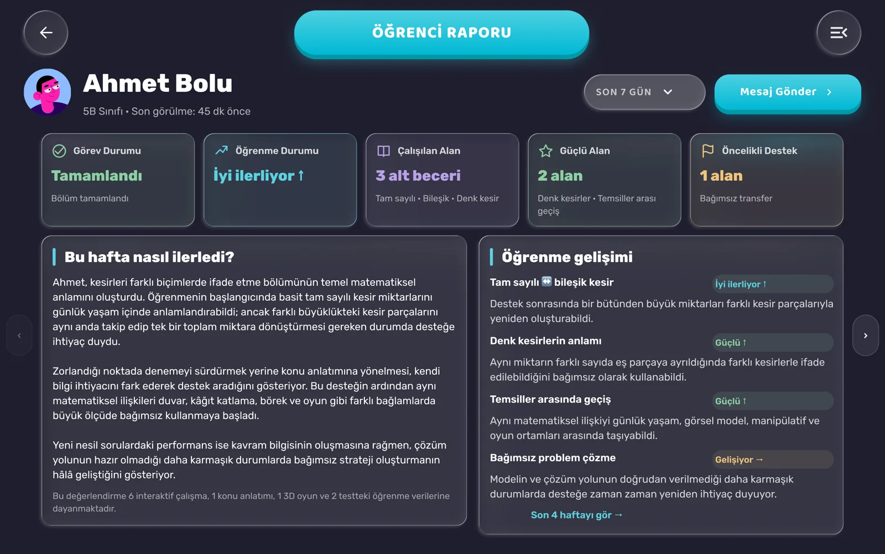
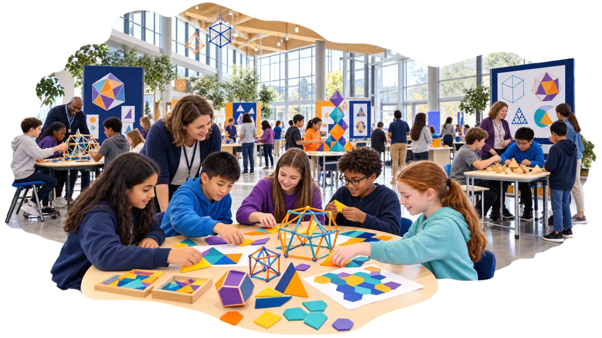

Matematiği yalnızca çözme. Deneyimle.
Öğrencinin matematiği düşünerek, keşfederek, fiziksel materyallerle deneyerek ve dijital ortamda yeniden yaşayarak öğrendiği bütünleşik bir sistem. Öğretmen sürecin aktif rehberidir: soru sorar, düşündürür, öğrenciyle birlikte ilerler.
Hızlı bakış
5. sınıf. Maarif Modeli’nin öğrenme hedeflerini daha sistemli ve zenginleştirilmiş etkinliklerle çalışmak için ek bir uygulama alanı.
Haftada bir gün, okul sonrası veya hafta sonu; 50 + 50 dakikalık iki ders.
6–9 kişilik küçük gruplar.
Her öğrenciye fiziksel ve dijital materyal Atomica tarafından sağlanır.
Atomica Matematik Atölyesi Sertifika Programı’nı tamamlamış öğretmen rehberliğinde. Öğretmen adı eklenecek
Grup günü, saati ve kontenjan eklenecek

Ezber değil, matematiksel ilişki
Öğrenci matematiksel ilişkileri kurar, farklı çözüm yollarını karşılaştırır ve nedenini açıklar. Öğrendiğini yeni problemlerde kullanır; matematiğe olumlu yaklaşım geliştirir.
- Materyalle deneyerek anlam kurar
- Çözümünü açıklamayı ve tartışmayı öğrenir
- Atomica’da aynı fikri dijital ortamda yeniden yaşar
- Gelişimi süreç verisiyle takip edilir
Bir atölye dersi nasıl ilerler?
- Soru ve merakDers cevapla değil, soruyla başlar.
- Fiziksel keşifÖğrenci materyallerle dener; elle, gözle çalışır.
- Farklı çözümlerAynı soruya farklı yollar aranır.
- Birlikte düşünmeÇözümler grupta tartışılır, nedenleri konuşulur.
- Matematiksel anlamKeşfedilen fikir matematik diliyle netleşir.
- Atomica’da uygulamaAynı fikir Atomica’nın etkileşimli içeriklerinde yeniden yaşanır.
- Süreç verisiÖğrencinin ilerlemesi öğretmene veri olarak döner.
- Hedefli destekÖğretmen, her öğrencinin ihtiyacını görüp nokta atışı destek sağlar; döngü yeniden başlar.
Atölyeyi farklı kılan ne
Dokunarak öğren
Kesir daireleri, geometrik parçalar ve onluk bloklarla matematiksel fikirler elle denenir.

Atomica’da yeniden yaşa
Atölyede kurulan anlam, Atomica’nın etkileşimli içerikleri ve oyunlarıyla pekişir.

Doğru anda doğru destek
Öğretmen, süreç verisiyle her öğrencinin takıldığı yeri görür ve bireysel destek verir.

Atölye sınıfın dışına taşar
Öğrenciler Atomica’nın düzenlediği Matematik Şenliği’nde çalışmalarını paylaşır, Matematik Olimpiyatı’nda problem çözer.

Örnek ders videosu
Atomica’nın örnek ders videosu eklenecek
Velilerin sorduğu
Atomica’nın süreç raporları öğretmene döner; öğrencinin gelişimi veliyle paylaşılır. Paylaşım sıklığı eklenecek
Atölyede başlayan etkinlik Atomica’da dijital olarak devam eder. Ev uygulaması düzeni eklenecek
Tanışma görüşmesinde öğrencinin seviyesi ve uygun grup birlikte belirlenir.
Atölyeyi deneyimleyin
Deneme dersi için gün ve saat bilgisi alın.